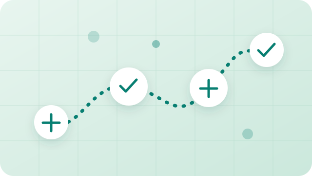

01AI AGENTS

Multi-Agent Business Travel Assistant
Goal: Make business travel planning and policy questions easier to handle through coordinated agents.
My contribution
- WorkflowStructured travel requests into focused agent tasks and combined their results.
- GroundingConnected the workflow to travel documents so answers could use relevant material.
- Evidence statusNo public demo or verified performance metric is provided in this portfolio.